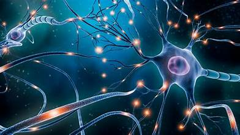
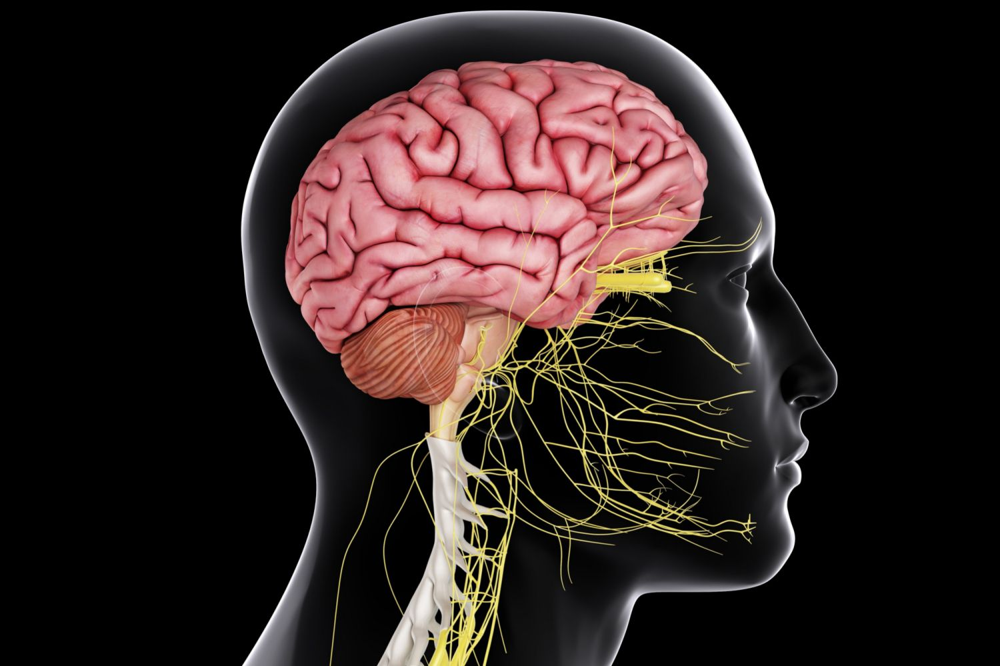
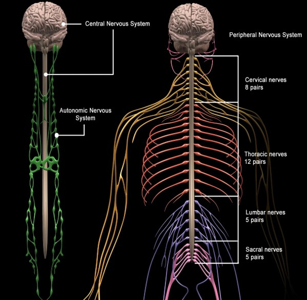
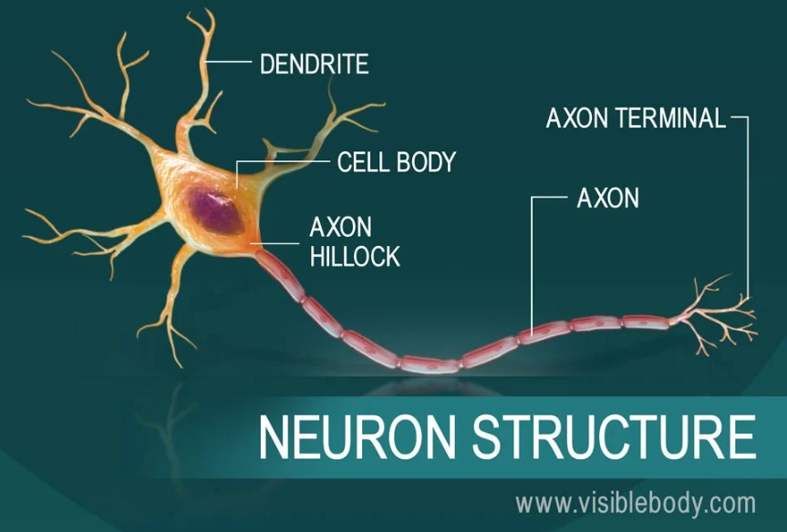
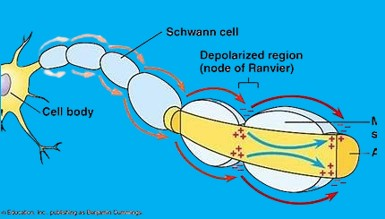

The nervous system is the body's rapid communication and control network. It allows you to sense the world, think, move, and regulate your internal body functions. It's an incredibly complex system responsible for coordinating all voluntary and involuntary actions.

Overall Function
The nervous system performs three main functions:
- Sensory Input: Gathers information from sensory receptors (e.g., eyes, ears, skin) about
changes inside and outside the body.
- Integration: Processes and interprets the sensory input, deciding what action needs to be
taken. This happens primarily in the brain and spinal cord.
- Motor Output: Responds to the integrated information by activating muscles or glands, leading
to a specific action.
Major Divisions of the Nervous System
The nervous system is broadly divided into two main parts:
-
Central Nervous System (CNS):
- Components: Consists of the brain and the spinal cord.
- Function: The command center. It receives and processes sensory information, integrates
it, stores memories, generates thoughts, and sends out motor commands.
- Protection: Both the brain and spinal cord are protected by bones (skull and vertebrae),
membranes called meninges, and a fluid called cerebrospinal fluid (CSF),
which cushions them.

-
Peripheral Nervous System (PNS):
- Components: All the nerves that extend outside the CNS, connecting the CNS to the rest of
the body (muscles, glands, sense organs).
- Function: Relays information between the CNS and the body's periphery.
- Subdivisions of the PNS:
- Sensory (Afferent) Division: Carries sensory information to the CNS from
receptors throughout the body.
- Motor (Efferent) Division: Carries motor commands from the CNS to muscles
and glands. This division has two further subdivisions:
- Somatic Nervous System: Controls voluntary movements by
activating skeletal muscles (e.g., moving your arm).
- Autonomic Nervous System (ANS): Controls involuntary functions
of internal organs (e.g., heart rate, digestion, breathing). It further divides into:
- Sympathetic Division: "Fight or flight" response; prepares the body
for stress (increases heart rate, dilates pupils).
- Parasympathetic Division: "Rest and digest" response; calms the
body, conserves energy (slows heart rate, stimulates digestion).

Cells of the Nervous System
The nervous system is made up of two primary types of cells:
-
Neurons (Nerve Cells):
- Function: The fundamental units of the nervous system responsible for transmitting
electrical and chemical signals (nerve impulses or action potentials). They are specialized
for communication.
- Structure:
- Cell Body (Soma): Contains the nucleus and most cellular organelles.
- Dendrites: Short, branching extensions that receive signals from other neurons and
transmit them towards the cell body.
- Axon: A single, longer extension that transmits signals away from the cell
body to other neurons, muscles, or glands. Axons are often covered by a myelin sheath
(formed by glial cells), which insulates the axon and significantly increases the speed of nerve impulse
transmission.
- Axon Terminals: The end branches of the axon that form connections (synapses) with
other cells.
- Synapse: The junction between the axon terminal of one neuron and the dendrite or cell
body of another neuron (or muscle/gland cell). Neurotransmitters are released here to transmit signals
across the gap.

-
Neuroglia (Glial Cells):
- Function: Support, nourish, and protect neurons. They do not transmit nerve impulses
themselves.
- Types (examples): Astrocytes, oligodendrocytes (form myelin in CNS), Schwann cells (form
myelin in PNS), microglia.
Nerve Impulse Transmission
- Resting Potential: A neuron at rest has an electrical potential difference across its
membrane, maintained by ion pumps (e.g., sodium-potassium pump). The inside is more negative than the outside.
- Action Potential: When a neuron receives a sufficiently strong stimulus, it generates a
rapid, brief reversal of membrane potential, called an action potential. This is an electrical signal that
travels down the axon.
- Synaptic Transmission: At the axon terminal, the action potential triggers the release of
neurotransmitters (chemical messengers) into the synaptic cleft. These neurotransmitters bind
to receptors on the next cell, either exciting or inhibiting it.

Key Points & Takeaways:
- The nervous system is the body's master control and communication system, integrating sensory
input, processing information, and executing motor commands.
- Remember the CNS (brain & spinal cord) as the processing center and the PNS (all
other nerves) as the relay network.
- Understand the basic functional difference between the somatic (voluntary) and
autonomic (involuntary) nervous systems, and the opposing roles of the sympathetic
(fight/flight) and parasympathetic (rest/digest) divisions.
- Neurons are the signaling cells, specifically designed for transmitting electrical impulses.
Know their basic parts (dendrites, cell body, axon, myelin).
- Neuroglia are the support cells for neurons.
- Grasp the concept of nerve impulse (action potential) as an electrical signal and
synaptic transmission as the chemical communication between neurons via
neurotransmitters.
Written by Kasiban Parthipan